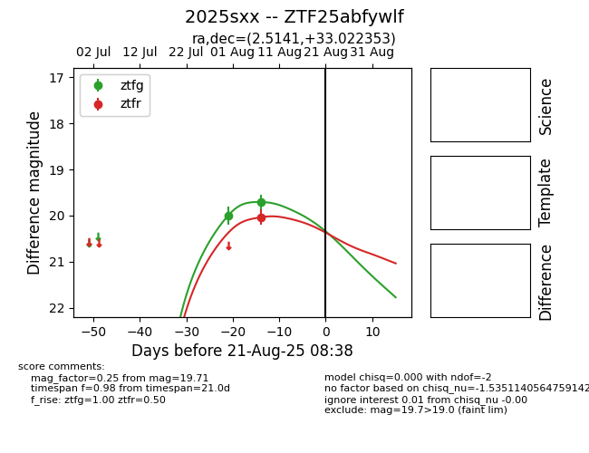

Target 2025sxx at 2025-08-21 10:01, see:
FINK: fink-portal.org/ZTF25abfywlf
Lasair: lasair-ztf.lsst.ac.uk/objects/ZTF25abfywlf
ALeRCE: alerce.online/object/ZTF25abfywlf
TNS: wis-tns.org/object/2025sxx
YSE: ziggy.ucolick.org/yse/transient_detail/2025sxx
alt names
ZTF25abfywlf (ztf,alerce)
2025sxx (tns,yse)
coordinates:
equatorial (ra, dec) = (2.5141,+33.02235)
galactic (l, b) = (113.0137,-29.05118)
photometry
last ztfg=19.71, ztfr=20.04
2 ztfg, 1 ztfr detections
